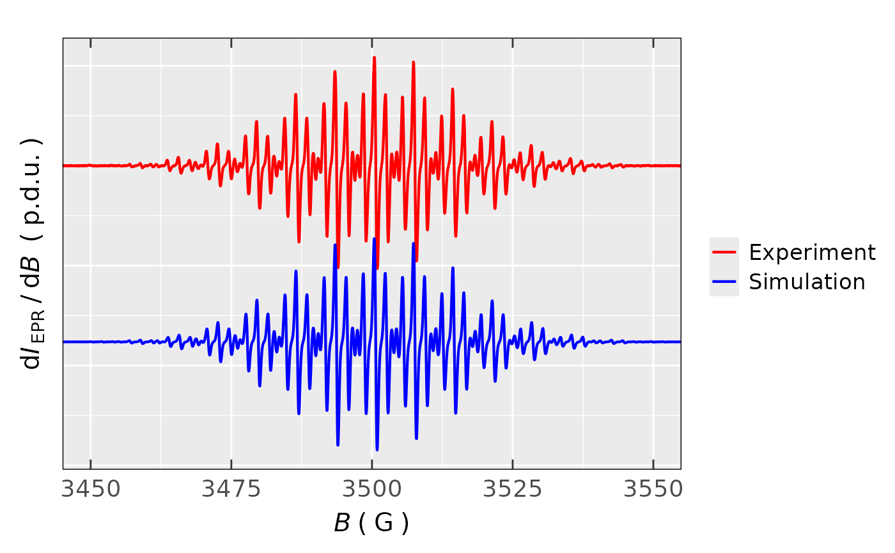
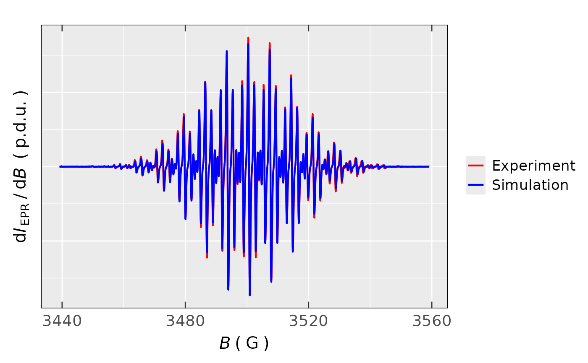

A Comparison of EPR Spectra Between Experimental and Simulated Form
Source:R/present_EPR_Sim_Spec.R
present_EPR_Sim_Spec.RdPresenting experimental as well as simulated/fitted EPR spectra together
in one ggplot2 object. They are visualized
in two possible modes. Despite the fact that quite often two spectra are compared in overlay mode,
sometimes it is rather difficult to figure out differences between the experimental
and the simulated EPR spectrum by such manner (the details can be "hidden" in overlays).
Therefore, there is also an option to offset the EPR simulated spectrum underneath the experimental
one, see argument Intensity.shift.ratio. For the sake of presentation, the maximum-minimum
intensity difference, of the simulated spectrum, is automatically scaled onto
the experimental one.
Usage
present_EPR_Sim_Spec(
data.spectr.expr,
data.spectr.sim,
B.unit = "G",
Blim = NULL,
Intensity.expr = "dIepr_over_dB",
Intensity.sim = "dIeprSim_over_dB",
Intensity.shift.ratio = 1.2,
B.shift = 0,
lineSpecs.form = "derivative",
line.color.expr = "red",
line.color.sim = "blue",
line.width = 0.75,
output.df = FALSE
)Arguments
- data.spectr.expr
Data frame object related to experimental spectrum, including the magnetic flux density (in
mTorG) column, which can be labeled asB_mTin mT (orB_Gin gauss), and the intensity column such asdIepr_over_dB, where theindexcolumn can be included as well.- data.spectr.sim
Data frame object related to experimental spectrum including the magnetic flux density (in
mTorG) column, which can be labeled asBsim_mTin mT (orBsim_Gin gauss), and the intensity column such asdIeprSim_over_dB. These column names are acquired automatically if function like thereadEPR_Sim_Specor theeval_sim_EPR_isois used to get the simulated spectrum data in ASCII.- B.unit
Character string, pointing to unit of magnetic flux density (coming from the original datasets) which is to be presented on \(B\)-axis of the EPR spectrum. Strings like
"G"(`Gauss`) (default) or"mT"(`millitesla`) can be used.- Blim
Numeric vector, magnetic flux density in
mT/Gcorresponding to lower and upper visual limit of the selected \(B\)-region, such asBlim = c(3495.4,3595.4). Default:Blim = NULL(corresponding to the entire \(B\)-range of both EPR spectra).- Intensity.expr
Character string, referring to intensity column name if other than
dIepr_over_dBname/label is used (e.g. for integrated spectra), default:Intesity = "dIepr_over_dB".- Intensity.sim
Character string, referring to intensity column name of the simulated spectrum if other than
dIeprSim_over_dBname/label is used (e.g. for integrated spectra), default:Intesity = "dIeprSim_over_dB", which is automatically set if thereadEPR_Sim_Specfunction is used to read the spectrum in ASCII.- Intensity.shift.ratio
Numeric (CANNOT BE
0), showing how 'far' is the simulated EPR spectrum presented underneath the experimental one. The lower the ratio, the 'deeper' the simulated spectrum offset, default:Intensity.shift.ratio = 1.2, other common values :0.6,0.8,1.2,1.1. If theIntensity.shift.ratio = NULL, BOTH SPECTRA ARE PRESENTED IN OVERLAY MODE !- B.shift
Numeric, difference between the \(B_{center}\) of simulated and experimental spectrum, that can be caused by switching ON the Teslameter. It refers to simulated spectrum, default:
B.shift = 0(NOTE: It depends on theBparameter. IfB.unit = "mT"=>B.shiftmust be inmT, or ifB.unit = "G"thenB.shiftmust be inG).- lineSpecs.form
Character string, describing either
"derivative"(default) or"integrated"(i.e."absorption"or sigmoid-integrated, which can be used as well) line form of the analyzed EPR spectrum/data.- line.color.expr
Character string, line color to plot simple EPR spectrum. All
ggplot2compatible colors are allowed (see alsoplot_EPR_Specs), default:line.color = "red", should be different fromline.color.sim.- line.color.sim
Character string, line color to plot simple EPR spectrum. All
ggplot2compatible colors are allowed, default:line.color = "blue", should be different fromline.color.expr.- line.width
Numeric, linewidth of the plot line in
mm, default:line.width = 0.75.- output.df
Logical, whether the data frame, corresponding to graphic spectra comparison (this actually corresponds to merging of the above-mentioned data frames by
dplyr::bind_cols) should be returned as well (output.df = TRUE). In such case, the output islistcontaining plot (list$plot) as well as the data frame (list$df). However, the default isoutput.df = FALSE, i.e. only graphical representation is shown.
Value
Plot object (list) of the experimental and the simulated EPR (in derivative or integrated form)
spectrum or list consisting of plot and the corresponding data frame df.
Any output plot corresponds to simple ggplot2 object and can be combined with a desired theme
(e.g. with plot_theme_NoY_ticks, see also Examples).
See also
Other Visualizations and Graphics:
draw_molecule_by_rcdk(),
plot_EPR_Specs(),
plot_EPR_Specs2D_interact(),
plot_EPR_Specs3D_interact(),
plot_EPR_Specs_integ(),
plot_EPR_present_interact(),
plot_labels_xyz(),
plot_layout2D_interact(),
plot_theme_In_ticks(),
plot_theme_NoY_ticks(),
plot_theme_Out_ticks()
Examples
## load package built-in EPR spectral
## data example:
data.file.path <-
load_data_example(file =
"TMPD_specelchem_accu_b.asc")
data.spectrum.expr <-
readEPR_Exp_Specs(path_to_ASC =
data.file.path,
col.names = c("B_G",
"dIepr_over_dB"),
qValue = 3500,
origin = "winepr"
)
#
## instrumental parameters for the spectrum,
## by the `WinEPR` spectrometer software
tmpd.params.file <-
load_data_example(file =
"TMPD_specelchem_accu_b.par")
#
## simulation of the TMPD radical cation
## EPR spectrum
data.spectrum.sim <-
eval_sim_EPR_iso(g.iso = 2.00303,
instrum.params = NULL,
path_to_dsc_par = tmpd.params.file,
origin = "winepr",
nuclear.system = list(
list("14N", 2, 19.29),
list("1H", 4, 5.49),
list("1H", 12, 19.66)
),
lineGL.DeltaB = list(0.48, 0.32),
lineG.content = 0.5,
)
#
## comparison of both spectra
## by the simulated spectrum offset
## and narrower B-range
present_EPR_Sim_Spec(
data.spectr.expr = data.spectrum.expr,
data.spectr.sim = data.spectrum.sim$df,
Blim = c(3450,3550)
) + plot_theme_NoY_ticks(legend.text =
ggplot2::element_text(size = 13)
)

#
## comparison of both spectra
## in overlay mode
present_EPR_Sim_Spec(
data.spectr.expr = data.spectrum.expr,
data.spectr.sim = data.spectrum.sim$df,
Intensity.shift.ratio = NULL,
) + plot_theme_NoY_ticks(legend.text =
ggplot2::element_text(size = 13)
)
